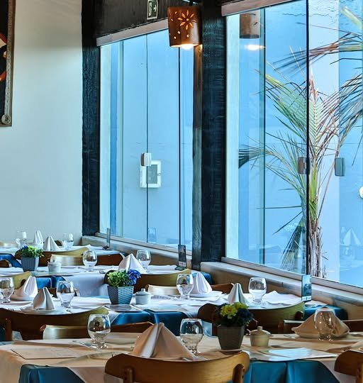

Restaurante Yemanjá: 52 anos servindo a Bahia à mesa.
Restaurante Yemanjá · Armação, Salvador
Domingo a sábado, das 11h30 às 17h

Toalha azul, guardanapo branco, luz do dia.
Mesa para família grande, para grupo do congresso e para quem chega sozinho. Tradição em frutos do mar, em Armação.
Foram mais de cinco décadas servindo a Bahia à mesa, recebendo famílias, amigos e visitantes de todos os cantos.Restaurante Yemanjá, no aniversário de 52 anos (novembro de 2026)
Em Armação, o Yemanjá recebe a família no almoço, os amigos na comemoração e quem chega a Salvador para os eventos do Centro de Convenções. A cozinha é a da Bahia: dendê, leite de coco, folha de bananeira e o que vem do mar.
A casa resume assim: “A melhor culinária da Bahia em Armação.”
O sabor do mar com a essência da Bahia.
Vai a um evento no Centro de Convenções?
Entre um congresso e outro, uma pausa com sabor de Bahia.
O Yemanjá fica pertinho do Centro de Convenções de Salvador. Tem estacionamento na frente do restaurante e, para grupo grande, é só reservar antes que a mesa já fica pronta.
Guarde sua mesa.
Mesa para dois, almoço de família, grupo do congresso ou aniversário. Preencha e a mensagem sai pronta para o WhatsApp do restaurante.
(71) 99698-5181Domingo a sábado, das 11h30 às 17h.
Armação · Salvador. Abrir no mapa